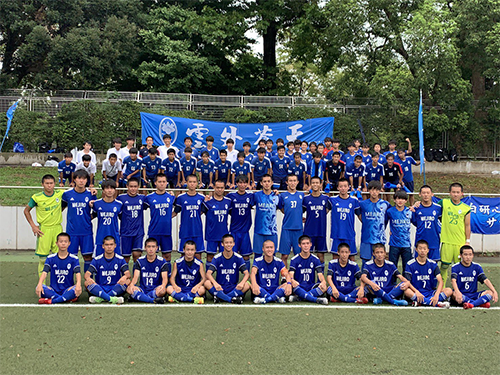
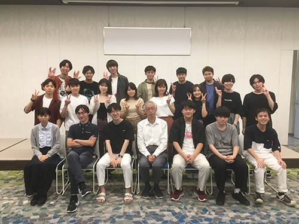
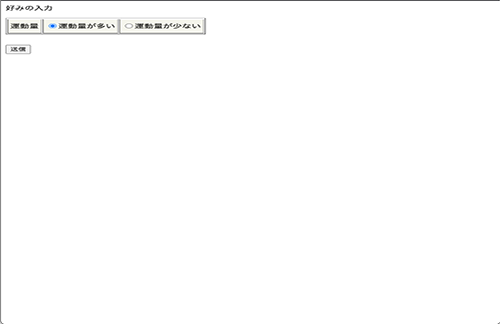
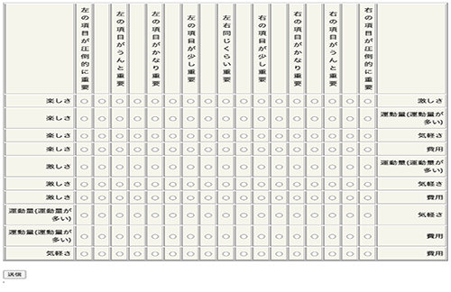
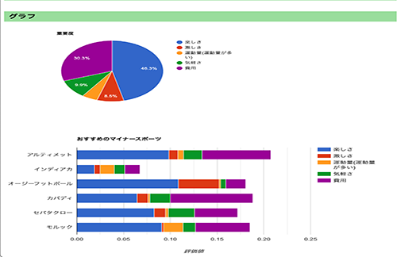
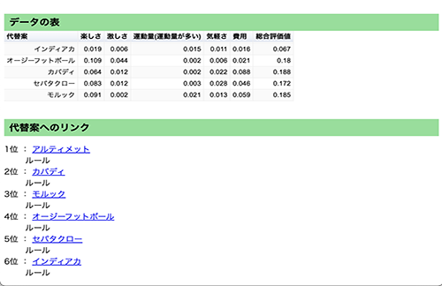

-Career-
high-school

2017年4月:目白研心高等学校入学
サッカー部所属
東京都Bブロックベスト16
高校初の東京都ベスト16を達成し、3年の11月に引退しました。また、同時に大学合格のための受験勉強も進めていました。チーム全体で80人ほどの部員がおり、自分はチーム内では絶対的なレギュラーではなくいわゆる控えの選手でした。それでも落ち込むことなく周りと差をつけるために弱点を見つけ、毎朝1時間早く学校に行ってコーチと一緒にトレーニングしたり、通常の練習も全力で取り組み必死にアピールしました。これが実を結び、公式戦に出場し得点を決めることができました。当時の喜びは今でも覚えています。受験のために練習後には、そのまま学校に最後まで残り勉強したり、引退後は朝にみんなより1時間早く学校に来て勉強したり、隙間時間を見つけ時間をできるだけ無駄にしないように計画して勉強することを考えました。引退は11月と遅くなりましたが、全力で3年間チームのみんなと努力できて本当に良かったと思っています。
university

2020年4月:専修大学商学部マーケティング学科入学
高萩ゼミ
ゼミでソフトウェアとアプリケーションを応用したシステムを作成しています。具体的に作成したシステムはExcelとPHPを使い、利用者におすすめのマイナースポーツを提案するシステムです。初めに、運動量が多いか少ないの二択の好みを選択してもらいその後、楽しさ、激しさ、選択した運動量多いか少ないか、気軽さ、費用の項目から重要度を選択してもらうことで、自動でおすすめのマイナースポーツを提示することができます。
作成したシステム：おすすめのマイナースポーツ
userid:takasemi
pass:ikuta2148580
（画像クリックでリンク移動）
